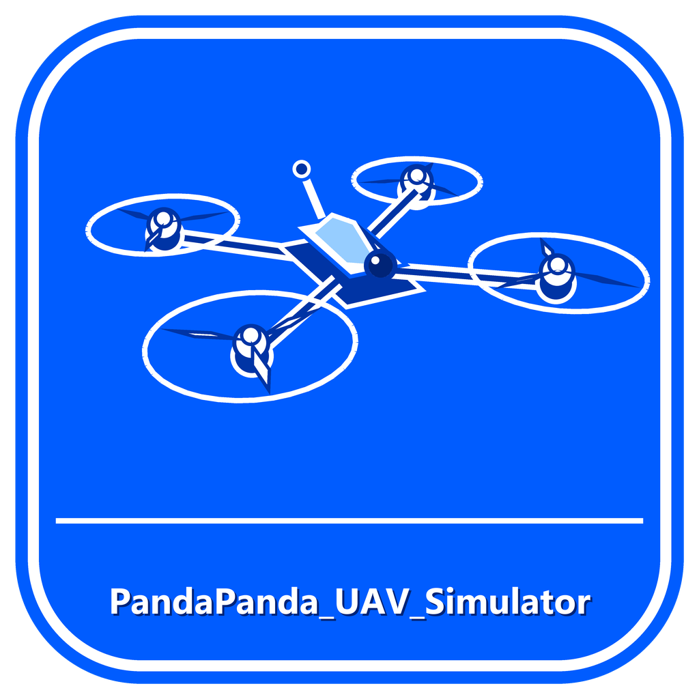

PandaPanda
無人機模擬器 軟體版
最新版本 v4.027 官方正式版 | Windows 7 / 8 / 10 / 11 專屬劃分
極致真實的 FPV 穿越機物理模擬，支援手把、鍵盤與 Rabboni 智慧積木體感操控。
具備獨立視窗執行架構、高幀率空氣動力學運算、自訂動力配置與跨世代作業系統原生相容支援。
Windows 10 / 11 專區
推薦版本 (極致體驗)
針對 Windows 10 與 Windows 11 原生 64 位元深度優化。提供最高 120+ FPS 流暢物理渲染、完整手把搖桿震動回饋與全螢幕沉浸飛行。
下載 Win10 / 11 安裝程式 (.exe)
下載 Win10 / 11 免安裝獨立版 (.exe)
下載通用安裝腳本 (.bat)
Windows 7 / 8 專區
舊系統相容版 (SP1 相容)
專為 Windows 7、8、8.1 打造之輕量跨世代核心，全面支援 TLS 1.2 連線修復、自動相容性檢測與無 Python 降級網頁模式。
下載 Win7 / 8 安裝程式 (.exe)
下載 Win7 / 8 免安裝獨立版 (.exe)
微軟官方 WebView2 核心支援組件 (Win7缺少時安裝)
多元操控支援
支援 USB/藍牙穿越機遙控器、遊戲手把、鍵盤以及 Rabboni 智慧積木六軸體感體感飛行。
真實空氣動力物理
精準模擬重力、空氣升力、角阻尼、推重比與真實陀螺儀姿態運算，飛行手感細膩自然。
自由機型配置與機庫展台
內建多種主流競速機型，支援 360° 自由環繞檢視，可自訂動力曲線與鏡頭視角。
雙核心跨世代引擎
針對新舊作業系統分別提供量身打造的原生執行檔，若無 Python 亦可無縫啟動網頁核心。
不想安裝？直接在瀏覽器遊玩：
開啟網頁免安裝版